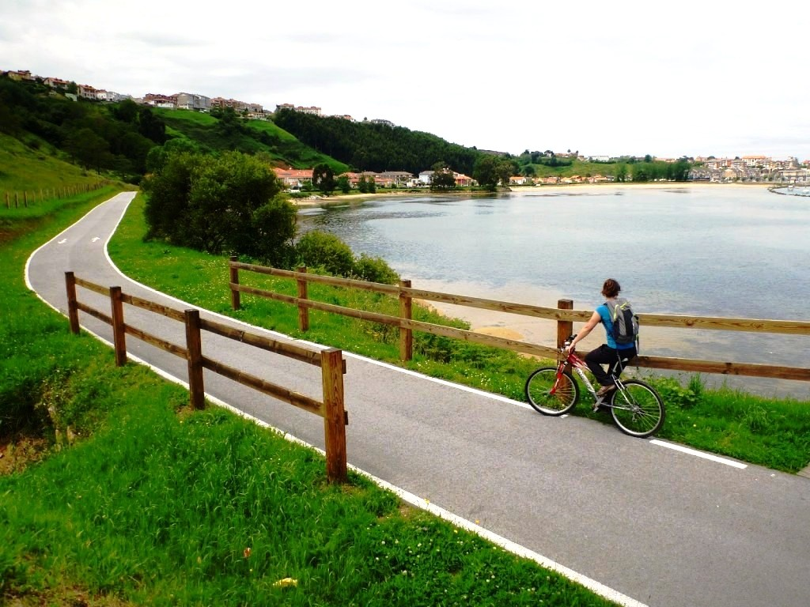

<center>
<table border="1" width="80%" height="100%">
	<tr height="200">
		<td colspan="2" bgcolor="lightblue">
			<center>
			<h1> Torrelavega </h1>
			</center>
		</td>
	</tr>
	<tr>
		<td background="viaverde.jpg" valign="top">
			<br/><br/>
			<font color="white">
			<ul>
				<li><a href="tabla.html">Inicio</a></li>
				<li><a href="tabla1.html">Via verde</a></li>
				<li><a href="tabla2.html">La Lechera</a></li>
			</ul>
			</font>
		</td>
		<td>
			<center>
			Este itinerario enlaza la costa, parques urbanos y forestales, praderas y
			parajes de media montaña siguiendo siempre el bosque de ribera que orla la 
			orilla de los ríos Besaya y Saja y la ría de San Martín de la Arena.
			Destacan el parque de la Ribera y la playa de la Riberuca, el estuario y 
			los humedales de la ría de San Martín de la Arena, los parques Futura Cantabria
			y La Viesca, el paisaje minero de Reocín y el Valle de Buelna. <br/> <br/>
			
			</center>
		
		</td>
	</tr>
</table>
</center>